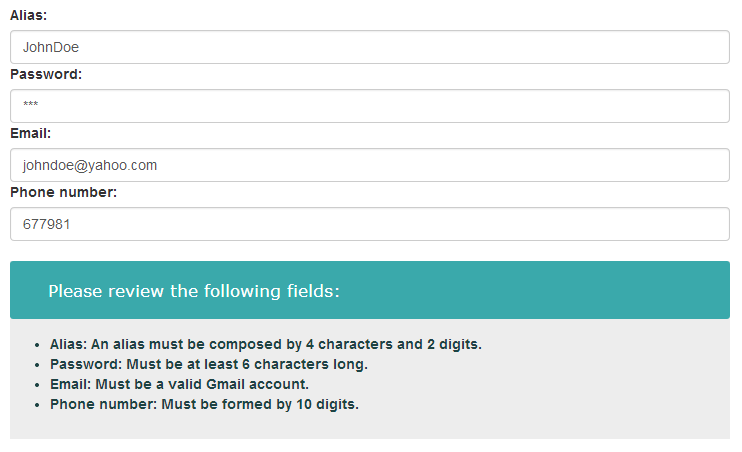

Distribution streams
You can download the source code folder or install this component through bower.Download
Download, unzip the source code folder and add the build files to your project.Install with Bower
Install and use lc-validation-summary using Bower$ bower install lc-validation-summary
Dependencies
- AngularJS
Getting started
- Add references to AngularJS and lc-validation-summary's js and css files
- Where you declare your app module, add lc-validation-summary:
- Wrap your html form with the directive
lc-validations-container: - Now, each input in the form you want to validate must contain a
lc-validation-bubblewich will notify the non-passing validations to thelc-validations-container. Then add one of the default supported validations or add your custom validation (in this example we useng-required) and define avalidation-friendly-nameto show in the view - In your html file, within the controller where you want to use lcValidationSummary, add a div element with the
lc-validation-summarydirective. This div will show the validation results to the user interface :
angular.module('myApp',['lc-validation-summary']);
<div lc-validations-container>
<form name="userForm">
<label for="userName">Name:</label>
<input name="userName"
type="text"
ng-model="model.name"/>
</form>
</div>
<div lc-validations-container>
<form name="userForm">
<label for="userName">Name:</label>
<input name="userName"
type="text"
ng-model="model.name"
ng-required="true"
lc-validation-bubble=""
validation-friendly-name="User Name" />
</form>
</div>
<div lc-validation-summary=""></div>
And we're done! Now the validation summary will notify the user when the input is empty.This is the final code and result:
In this simple tutorial, the validation message "this field is mandatory", is the associated message to the angular ng-required directive. Check out more advanced samples to see how to set your custom messages and custom directives .
Default values
Default supported Validations
The default supported validations contained inlcValidationProvider and their default custom error messages are:
| Supported validation | Default error message. |
|---|---|
| ng-required | "This field is mandatory" |
| ng-pattern | "This field doesn't match the pattern set" |
| ng-minlenth | "This field exceeds the maximum length" |
| ng-maxlength | "This field doesn't reach the minimum length" |
Customize
Adding custom Validations
You can add your custom validation directives making use of the validationContainerServiceProvider in your app.config(configFn) function:- Register your custom Validation in your app
- Use the method addValidation() from the
validationContainerServiceProviderto add a validation item with the following fields:{ type: 'myCustomDirective', friendlyDescription: 'myErrorMessage' } - In the html code, add your directive to an input field
myApp.directive('myCustomValidation',fcn(...){...});
<input name="myInput"
my-custom-validation=""
lc-validation-bubble=""
validation-friendly-name="myInputFriendlyName"/>
Adding custom error messages
You can also add your custom messages by making use of thevalidation-custom-error-message parameter:
- Add the parameter
validation-custom-error-directiveand set it to the name of the validation you want the input field to have. Wether it's a custom or a default one. - Add the parameter
validation-custom-error-messageand set it to the message you want to show when the validation is not passing.
<input name="myInput"
validation-custom-error-directive="myCustomValidation"
validation-custom-error-message="My custom error mesage"
validation-friendly-name="myInputFriendlyName"
lc-validation-bubble=""/>
Using a custom template
You can also add your custom template by overwritting thelcvalidationSummary-tpl.js template code:
- Create a new js file and name it whatever you want.
- Copy the content of lcvalidationSummary-tpl.js into your new file.
- Overwrite the template with your custom style and html.
Code Samples
Sample 00 - Validating two input fields
This sample moves one small step forward by adding another input field to the form.
Sample 01 - Using different angular validations
You can use a set of different angular built in validations and apply them to each input in a form.
Sample 02 - Using a custom validation
Here is where the fun stuff starts! Use your own angular directives to validate input fields your own way.
In this sample we're using a home-made directive named check-two-fields-match that validates
if a couple fields are matching. Usually needed when requiring e-mail addresses.
Sample 03 - Adding custom error messages
Add custom error messages to your directive by using the parameter validation-custom-error-message
Sample 04 - Using a custom template
Overwrite the lcValidationSummary. template by simply linking to a custom template file lcValidationSummary-tpl.js